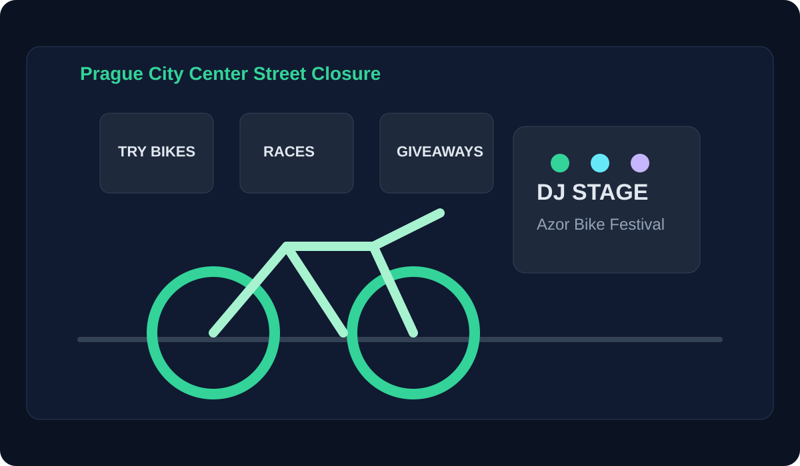

Status
Concept Stage
This page presents a future-facing activation concept rather than a currently scheduled event. Think of it as a pitch deck in webpage form: a narrative, a visual direction, and a practical rollout concept for market entry.
Concept Stage
Inspire Stakeholders
Idea Presentation
Validate & Prototype
Create a temporary “Movement District” where bikes become the main character of a public square.
Make first contact with Azor feel optimistic, social, and deeply connected to Prague's street culture.
Turn product discovery into a shared public experience, not just a retail transaction.
Instead of locking details too early, the concept frames flexible zones that can be adjusted by budget, partnerships, and permitting realities.

Short guided test routes and feature walkthroughs for curious first-timers.
Gamified riding moments and micro-competitions designed for social sharing.
DJ sets, local food, and creator-led stories that make the concept feel native to Prague.
A narrative exhibit showing Azor’s journey from Dutch roots to Czech ambitions.
Confirm partner appetite, location options, and risk constraints with city and local collaborators.
Run a smaller proof-of-concept weekend to test experience design and audience behavior.
Convert the validated format into a flagship launch moment with stronger media support.
Pre/post brand familiarity in Prague audiences and social mention volume.
Participation rates, test-ride completion, and audience satisfaction markers.
Dealer and partner follow-up demand after the pilot activation.